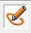

�wiczenia krok po kroku
Klasa 6b Informatyka
Temat: Logomocja. Rysujemy w edytorze postaci.
Otw�rz program Logomocja Edytor postaci Demo
Je�eli uruchamiasz program pierwszy raz mog� pojawi� si� trzy okna osobno:
Okno g��wne, Przybornik i Tre��
W programie Logomocja, aby okno Przybornika i Tre�ci umie�ci� w oknie g��wnym, nale�y przeci�gn�� je i upu�ci� w tym oknie.
Chc�c narysowa� kotka w przyborniku wy�wietl palet� kolor�w klikaj�c prawym przyciskiem myszy (PPM) w kolorowe k�ko z tr�jk�tem w �rodku i wybierz Wy�wietl palet�
Wybierz Pi�ro i kszta�t Niewyko�czony �uk
Narysuj kotka klikaj�c lewym przyciskiem myszy (LPM) i przy wci�ci�tym przycisku rysuj po ma�ym odcinku kszta�t kotka. Aby przesta� kliknij PPM
Do narysowania oczu u�yj kszta�tu Elipsa 
Do narysowania nosa u�yj kszta�tu Wielobok
Do narysowania w�s�w u�yj kszta�tu Linia
Zamaluj nos i oczy
I gotowe :-)
Pracy nie mo�na zapisa� bo jest to program Demo, ale mo�esz zrobi� zdj�cie i wys�a� na adres: jakrzemian@gmail.com lub zr�b zdj�cie i wy�lij mms na nr 606857361
Powodzenia!
Program potrzebny do realizacji tematu:
https://pobierz.pl/windows/logomocja-imagine/